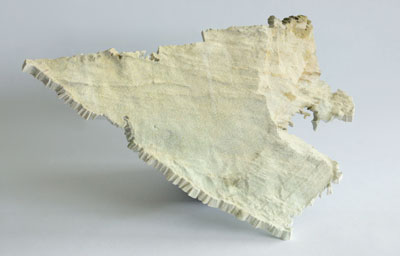

23
Apr
Data, originally from Earth Sciences (?), supplied by Nick Holliman from the Interactive Media Technology Group, has finally been printed. Â This took a bit of work to manipulate into a managable data-set ready for print. The original data is a LIDAR scan point cloud, originally given in VTK format. I had to write a tool to convert into point-cloud-only PLY.

Apparently, its a cliff face near the sea in the US. Large expensive houses ride on the fate of coastline erosion.